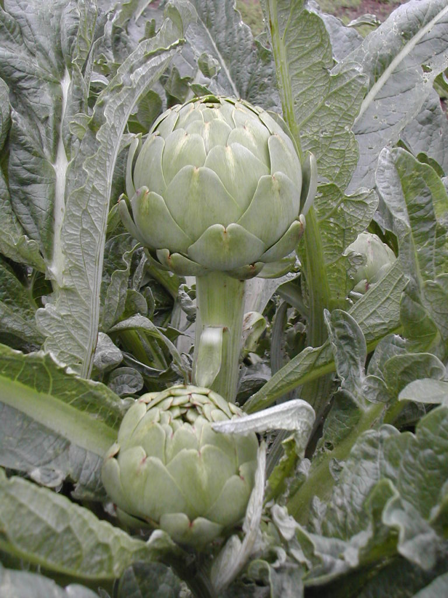

Cynara scolymus
| common name | (globe) artichoke | |
| en español | alcachofa | |
| plant family | Asteraceae (aster/daisy) | |
| parts used | fresh flower heads, fresh and dried leaves |

from Wikimedia Commons by Fernando Lopez Anido - Template:Universidad Nacional Rosario - Argentina, CC BY-SA 3.0
observations/description
dried leaf
- fuzzy, squishy, fluffy
- beautiful pale grey-green
- gentle, vegetal/chlorophyll aroma, slightly sweet
"Artichoke", Wikipedia
- arching, deeply lobed, silvery, glaucous-green leaves
- flowers develop in a large head from an edible bud with numerous triangular scales
- individual florets are purple
- edible portions of the buds consist primarily of the fleshy lower portions of the involucral bracts and the base, known as the heart
- mass of immature florets in the center of the bud is called the choke or beard (which are inedible in older, larger flowers).
distribution/conservation status
"Artichoke", Wikipedia
- the artichoke is a domesticated variety of the wild cardoon (Cynara cardunculus), which is native to the Mediterranean area
- Dutch introduced artichokes to England in the Middle Ages; they were taken to the United States in the nineteenth century (to Louisiana by French immigrants and to California by Spanish immigrants)
- cultivation of the globe artichoke is concentrated in the Americas and the countries bordering the Mediterranean basin
- main European producers are Italy, Spain, and France and the main American producers are Argentina, Peru and the United States
primary actions
The Modern Herbal Dispensatory, p. 177-8
- alterative, anticholesteremic, bitter, cholagogue, digestive tonic, liver tonic
The New Age Herbalist, p. 45
- cholagogue, diuretic
system affinities
digestive
primary uses
The Modern Herbal Dispensatory, p. 177-8
- leaf contains cynarin, which has proven liver protection cabalities
- leaves used as a digestive bitter for sluggish liver and poor digestion
The New Age Herbalist, p. 45
- flower heads are a common vegetable for culinary use
- medicinal uses come from the leaf
- used to treat sluggish livers and debilitated digestion
- cynarin and scolymoside shown to stimulate bile secretion
- used to treat ateriosclerosis
- cynarin also shown to lower both cholesterol and triglyceride levels in the blood
- diuretic: used to treat kidney diseases and protein in the urine
notes from class, 27 Jan 2025
- supports liver and bile
- indicated for dyspepsia, indigestion, skin issues associated with the liver, hepatic insufficiency, flatulence, nausea, GERD, jaundice, liver or gall bladder congestion
- similar to gentian but without any conservation/sustainability issues
- regulates bowel movements, even when there is IBS
- contains (long chain) inulin
- helpful for regulating cholesterol levels
- can aggravate dryness/vāta
energetics
The Modern Herbal Dispensatory, p. 177-8
- cooling, drying
pharmacology
The New Age Herbalist, p. 45
- bitter principle (cynarin and sesquiterpene lactones), flavonoids (incl. cynaropictin, scolymoside, inulin), enzymes, taraxasterol, sugars, volatile oil
The Modern Herbal Dispensatory, p. 177-8
- contains silymarin, the active ingredient in milk thistle
contraindications/pharmaceutical interactions/warnings
The Modern Herbal Dispensatory, p. 177-8
- care should be taken whenever there are sensitivities to members of the Asteraceae family
preparations
The Modern Herbal Dispensatory, p. 177-8
- standard decoction
- assume referring to fruit, 30 g: 1 L, covered
- tincture
- fresh leaf, 1:2, 95% alcohol
- dried leaf, 1:5, 40% alcohol
- glycerite
- dried leaf, 1:8
Herbal Materia Medica, p. 15
- standard infusion
- dried leaf, 1:32
- tincture
- (dried) herb in flower, 1:5, 50% alcohol
dosage
The Modern Herbal Dispensatory, p. 177-8
- standard decoction: 2-4 oz, 3/day
- tincture: 1-4 mL, 3/day
- glycerite: 1-5 mL, 3/day
Herbal Materia Medica, p. 15
- standard infusion: 2-4 oz, up to 3/day
- tincture: 30-90 drops, up to 3/day
extra information
personal experiences/simples
tisane (1 tsp: 10 oz, 8 minutes), dried leaf
- it is quite bitter, fills the mouth with a texture almost as much a flavor -- almost an airiness or buoyant quality
- rich, vegetal flavor, like a strong green tea but more complex (and bitter)
- sweet body through the bitter
- it is a friend, makes me happy
- i wish to enjoy it slowly, yet after each (large) sip i want the next
- can brew longer/higher herb:water ratio
- saliva is definitely being produced
- having very satisfying bowel movements
macerate (2 tbsp: 32 oz, 10 hours), dried leaf
- pleasantly sweet aroma; marc especially has a sweetness reminiscent of caramlized artichoke (vegetable)
- still quite bitter, still fills the mouth texturally, though more mildly than the tisane, less airy/buoyant
- quite a deepness to the experience; depth of flavor, downward energy
- sweet body
- very pleasant with citrus sparkling water, very reminiscent of amaro
- as with the tisane, i feel artichoke is assisting in producing solid, well-formed, easily-passed bowel movements
- also as with the tisane, i feel an urge to both savor each sip and take in the next one quickly
witchcraft
recipes
sources
"Artichoke" on Wikipedia. Retrieved 7 May 2025.
Easely, Thomas and Steven Horne. The Modern Herbal Dispensatory (2016)
Goldberg Blackthorn, Samantha and Shona MacDougall. Ace of Cups Herbal Medicine and Botanical Magic Herbal School (2024)
Mabey, Richard et al. The New Age Herbalist (1988)
Moore, Michael. Herbal Materia Medica, Fifth Edition (1995)